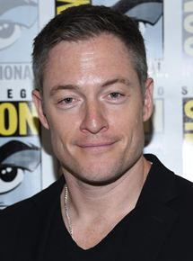

| Atividade | Ator |
|---|---|
| Nacionalidade | Canadense |
| Nascimento | 20 de maio de 1975 |
| Idade | 42 anos |
Sua primeira aparição no cinema foi em uma cena com Kate Jackson no filme CBSCold Heart of a Killer. Ele passou a aparecer em uma dúzia de filmes curtos independentes e muitas séries de televisão, incluindoSmallville,The L Word, Just Cause, Stargate SG-1 e Dark Angel.
Na sétima e última temporada da série da polícia canadenseCold Squad, Tahmoh teve um papel regular como Constable Ray Chase. Em 2005, ele estrelou como Dr. Noah Hamilton nofilmeLifetimeTV,Hush.
Ele estrelou como tenente Karl "Helo" Agathon no Sci-Fi (agora SyFy) Canal programa de televisãoBattlestar Galactica. Depois de filmar a segunda temporada deGalactica , Tahmoh teve a oportunidade de trabalhar com o eminente diretor Monte Hellman no filme de terror, Trapped Ashes . Outro projeto de terror, o Trick 'r Treat de Bryan Singer , bem como as aparições de hóspedes em Smallville e Whistler mantiveram Tahmoh ocupado durante o hiato da terceira temporada. Enquanto filmava a quarta e última temporada da Battlestar, Tahmoh foi lançado como agente do FBI "Paul Ballard" na série Fox de Joss Whedon, Dollhouse. Ele estrelou a minissérie SyFy Riverworld . Em 2010, ele trabalhou com amigos de longa data Aleks Paunovic e Brent Cote no curta-metragem The Hostage .